Linux剑法（第四式）
组管理和权限管理
在linux专用每一个用户都要属于一个组，不能独立于组外，就像是我们人生来就属于一个国家。在Linux中每个文件有所有者、所在组、其他组的概念。接下来我们就看看这些概念。
所有者
假如我们现在有一个用户jerry，他创建了一个文件hello.txt，那么我们就说这个文件的所有者是jerry，当然jerry也可以将文件转给别的用户比如jack。一般来讲为文件的创建者，谁创建了文件，谁就成为文件的所有者。当然这并不绝对，我们可以使用指令chown 用户名 文件名修改文件的所有者，使用ls -ahl查看文件的所有者。
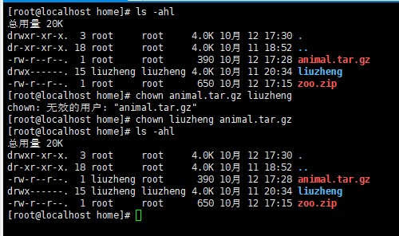
所在组
假如用户jerry属于组一，他建立了一个文件hello.txt，那么我们说hello.txt也属于组一，组一就是hello.txt的所在组，组内的其他成员，比如jack，也对文件有一定的权限，去操作文件。当某个用户创建了一个文件后，这个文件的所在组就是用户的所在组。ls -ahl同样可以查看文件的所在组，我们可以使用chgrp 组名 文件名来修改文件的所在组。
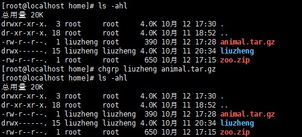
其他组
现在我们有了一个属于组一的文件hello.txt但是这个文件并不属于组二，那么我们就说组二是文件hello.txt的其他组，虽然是其他组，但对文件hello.txt也还有一些权限。我们可以更改一个用户的所在组我们之前也讲过只需要使用usermod -g 组名 用户名即可，但我们需要注意组一定存在才可以转移进去，我们可以使用cat查看/etc/group来看看都存在那些组。我们还可以做的事情是更改用户登录的初始目录，指令是usermod -d 目录名 用户名，这样就可以改变用户登录的初始目录了但要注意的是用户需要有进入到新目录的权限才可以。
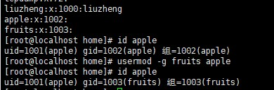
权限的基本介绍
我们使用ls -l(ll指令)指令的时候会发现有一串神秘的字符串，其实它就代表了文件的权限。它的每位都有特殊的含义。
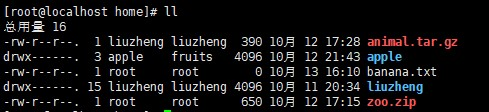
我们来看看这9位字符都告诉了我们什么，首先是第0位，它确定了文件的类型，-表示普通文件，i相当于链接，相当于Windows的快捷方式，d是目录，相当于Windows的文件夹，c是字符设备文件，像是鼠标、键盘之类的，b是块设备，比如硬盘。其次1-3位确定所有者拥有该文件的权限，r代表可读，w代表可写，对于目录来讲代表可修改，x表示可执行，对于目录来讲就是可进入。在着4-6位确定所属组拥有该文件的权限。最后7-9确定其他用户拥有该文件的权限。在日期前面还有一些数字，这些数字代表文件大小，至于所有者前面的数字代表硬链接数目，一个文件至少一个，一个文件夹至少两个。在Linux中r可以用4代替，w可以用2代替，x可以用1代替，所以全部的权限可以用7代替。
修改权限chmod指令
基本语法：
chmod u=rwx,g=rx,o=x 文件/目录名
chmod o+w 文件/目录名
chmod a-x 文件/目录名
其中u代表所有者，g代表所在组，o代表其他组，a代表所有，也就是u，g，o的总和。我们可以使用+，-，=变更权限。
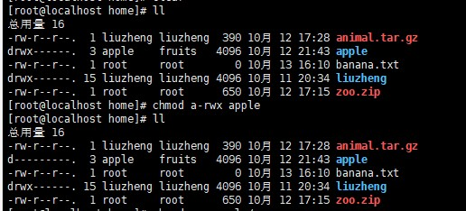
也可以用数字变更权限
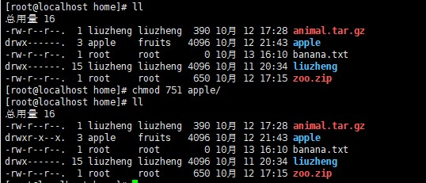
修改文件所有者chown指令
基本语法：
chown [选项] newowner 文件/目录
chown [选项] newowner:newgroup 文件/目录
常用选项：-r：如果是目录则使其下所有子文件或目录递归生效。如果对目录使用chown时没有使用-r选项那么其子文件和目录所有者和所有组不变。
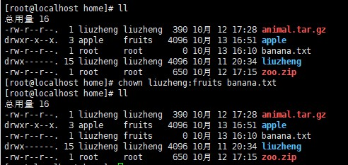
修改文件所在组chgrp指令
基本语法：
chgrp [选项] newgroup 文件/目录 改变所在组
常用选项：-r：如果是目录则使其下所有子文件或目录递归生效。
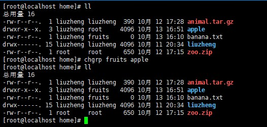
crond任务调度
任务调度的意思是指系统在某个时间执行的特定的命令或程序，可以分为系统工作和个别用户工作。系统工作是指有些重要的工作必须周而复始的执行，如病毒扫描。个别用户工作是指个别用户可能希望执行某些程序，比如对MySQL数据库的备份。想象一下当你需要凌晨起来备份一下数据库，这样的事情谁受得了啊！！所以我们要知道怎么使用任务调度代替我们做这样的工作，任务调度会使用crontab指令。
基本语法：crontab [选项]
常用选项：-e：编辑crontab定时任务。-l：查询所有crontab任务。-r：删除当前用户所有的crontab任务。
假设我们现在要每一分钟向文件中写入当前时间，我们可以先在终端中使用crontab -e，进入任务编辑页面，然后输入*/1 * * * * date>>time.txt（注意空格），之后退出。
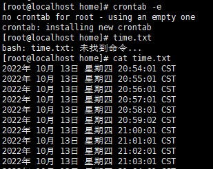
看了任务指令，少侠想必一定是一头雾水，这一串**是什么，哎，少侠果然发现了华点盲点，其实这5个 *确实不是常物，第一个 *代表一个小时当中的第几分钟范围是0-59，第二个 *代表了一天当中的第几个小时0-23，第三个 *是一个月中的第几天范围是1-31，第四个 *是一年当中的第几个月范围是1-12，第五个 *是一周当中的星期几范围是0-7(0和7都是星期日)。
crond任务调度还有一些特殊的符号，比如我们刚才说的“* ”代表任意时间，比如第一个 * 就代表一小时中每分钟都执行一次的意思。“，”代表不连续的时间比如“0 8,12,16 * * * ” 就代表每天的8点0分，12点0分，16点0分都执行一次命令。“- ”代表连续的时间范围比如“0 5 * * 1-6“代表周一到周六的凌晨5点0分执行命令。”*/n“代表每隔多久执行一次比如 ” */10 * * * * “代表每隔10分钟就执行一遍命令。
我们可以使用service crond restart重启crond，也可以使用service crond stop关闭crond，使用service crond start启动crond。
at定时任务
基本语法：at [选项] [时间]，Ctrl+D结束at输入
at是一次性定时任务，at的守护进程atd会以后台模式进行，检查作业队列来运行，默认情况下，atd守护进程每60秒检查作业队列，有作业的时候，会检查作业运行时间，如果时间与当前时间匹配，则运行此作业，所以我们在使用at指令的时候一定要保证atd进程的启动，我们可以使用ps -ef | grep atd，其中ps -ef的作用是显示所有进程。
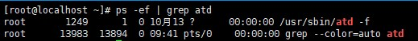
我们可以看到”/usr/sbin/atd -f”这说明atd进程已经被启用了，我们可以使用at指令了。
选项：-m：当指定任务被完成后，将给用户发邮件。-i：atq的别名。-d：atrm的别名。-v：显示任务将被执行的时间。-c：打印任务的内容到标准输出。-V：显示版本信息。-q<队列>：使用指定的队列。-f<文件>：从指定文件读入任务而不是从标准输入读入。-t<时间参数>：以时间参数的形式提交要运行的任务。
at指令的时间参数接受在当天的hh:mm(小时:分钟)式的时间指定，这里的小时采用12小时计时法所以要在时间后面加上AM(上午)或PM(下午)，假如这个时间已经过去了那就放在第二天执行。我们还可以使用midnight(深夜)，noon(中午)，teatime(一般是下午4点)等模糊词来指定时间。如果任务需要在某一个具体日期执行我们可以使用month day或mm/dd/yy或dd.mm.yy，指定的日期必须在指定的时间后面。有具体的也有相对的，我们还有相对计时法，格式为now+count time-units，这里time-units表示时间单位，可以是minutes、hours、days、weeks，count表示时间数量。
我们可以使用atq查看还未执行的任务，使用atrm 编号删除已经设置的任务。
使用at指令后会进入任务编写，我们可以几条指令，也可以执行一个脚本。
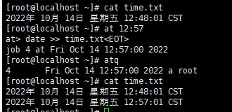
 wechat
wechat alipay
alipay